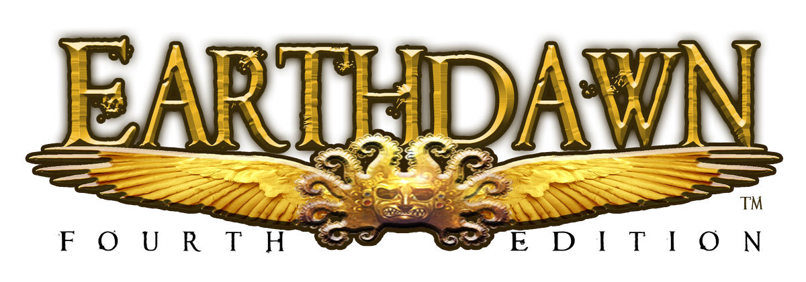

ED4E - Earthdawn 4th Edition Foundry VTT System - v0.2.0
Earthdawn 4E for Foundry Virtual Tabletop


An implementation of the Earthdawn Fourth Edition game system for Foundry Virtual Tabletop.
The project is currently in beta and under active development. Feedback, bug reports, and feature requests are welcome through the repository’s Issues.
Features
Complete Character Management
- Full support for all Namegivers and Disciplines
- Dynamic character sheets with intuitive navigation
- Built-in character generation tools
Authentic Earthdawn Mechanics
- Step dice rolling system faithful to 4th edition rules
- Thread item weaving and advancement
- Karma, wound, and blood magic tracking
- Combat modifiers and action tracking
Multilingual Support
- Available in English, German
- French and Polish in preparation
- Fully localized interface and content
Beautiful Interface
- Custom-designed sheets capturing the Earthdawn aesthetic
- Intuitive layouts for quick gameplay
- Enhanced chat messages for rolls and actions
Installation Instructions
The latest version of the system can be installed through the in-app System Browser and searching for "Earthdawn".
You can also use one of the following alternative installation methods:
- Pasting https://github.com/earthdawn-vtt/fvtt-earthdawn4e/releases/latest/download/system.json into the Install System dialog on the Setup menu of the application.
- Browsing the repository's Releases page, where you can copy any system.json link for use in the Install System dialog.
- Downloading one of the .zip archives from the Releases page and extracting it into your foundry Data folder, under Data/systems/ed4e.
Frequently Asked Questions
The best way to learn about the system is in our documentation or the wiki.
More Content
For a full list of available premium content, have a look at the Foundry package page, or search for "Earthdawn" on the Foundry VTT Marketplace.
Community Contribution
Have a look at the CONTRIBUTING file for information about how you can help this project.
AI Guidelines
No AI is used for the generation of any kind of assets, texts, and other creative media. All sources are indicated accordingly.
People might use it to support the development process, under strict guidelines (see CONTRIBUTING.
We strive to keep AI to a minimum.
Credits
Assets
Icons
- https://game-icons.net, see Authors & Contributors on https://game-icons.net/about.html#authors